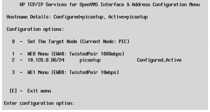
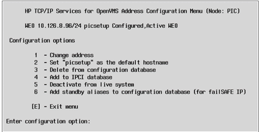
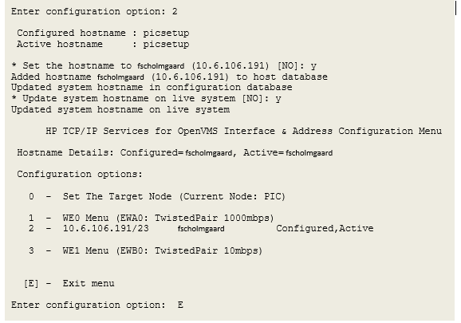
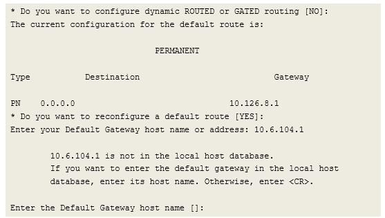
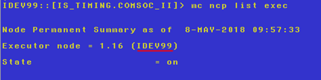

Modifying an Integrity Server's Network Configuration
Purpose
This document describes how to configure the HP TCP/IP and DECnet networks to allow users to log onto the Integrity FSC Server with MOC, JES and Telnet and allow COM-SOC II booting.
Application
This work instruction applies to all Space Plants that have FSC and Space IS Machines
Safety
 |
 |
Procedure
- TCP/IP Configuration
- Connect to the Management Port and then connect to the Console.
- Log on as username SYSTEM
- Start the TCP/IP configuration utility. Command: @tcpip$config
- When the first menu displays (Figure 1), select Core environment by typing a ‘1’ and pressing Enter.
- Set the Domain name by typing ‘1’ and
Enter to begin the dialog. (See Figure 2.) At the prompt, you can type in a
new domain name to replace “na.Space.intra”. If you wish to leave it alone, just
press Enter and no change will be made.
Figure 3. Figure 1: TCPIP$CONFIG Main Menu 
Figure 4. Figure 2: TCPIP$CONFIG Core Environment Menu 
- To begin changing the IP address, type ‘2’ and
Enter when the Core Environment Menu (Figure 2) is displayed. Figure 3 shows the menu for OpenVMS 8.4. If
your operating system is version 8.3, the choice “0” will be absent.
Figure 5. Figure 3: Interface , andamp; Address Configuration Menu 
- Type the number ‘2’ in the Interface and Address
Configuration Menu. This selects the pre-configured IP address. The
result will be the menu shown in Figure 4.
Figure 6. Figure 4: Address Configuration Menu 
- To change the address, type the number ‘1’ in the Address
Configuration Menu. The utility will begin a dialog immediately below
the last prompt. An example is shown in Figure 5.
Figure 7. Figure 5: Address Configuration Dialog 
-
Note:
The first question is always “NO” and can be answered by just pressing Enter. Prompts where there is a value in [brackets] will use the enclosed answer as the default by pressing only the Enter key to answer.
-
- If you made an error in the information, answering “n” will restart the dialog so that you can enter corrections. Once you are satisfied, press Enter.
- Answer the next two questions with “y” as shown in Figure 5 to complete the IP changes. The menu shown in Figure 3 will be presented again with the updated information.
- Type a “2” to choose the IP Address Configuration Menu again. This time the menu in Figure 4 will show the new hostname in option #2.
- Choose the option #2 Set “, andlt;newhostname, andgt;” as the default hostname where
, andlt;newhostname, andgt; is the name you used in the previous change. This will
result in the prompts shown in Figure 6 (below).
Figure 8. Figure 6: Address Configuration Dialog 
- Type “E” to leave the IP Address Configuration Menu. This will place you back in the Core Environment Menu (Figure 2).
- Type “3” (Routing) for the next choice in
the Core Environment Menu. This will cause a long explanation to print out
followed by the question:
* Do you want to configure dynamic ROUTED or GATED routing [NO]:
- Answer “no” by just pressing Enter. The
dialog in Figure 7 shows how to add
the correct Default Gateway
Figure 9. Figure 7: Default Gateway Dialog 
- To confirm whether the gateway address changed, repeat steps 14 and 15 to see the new address. You can answer “no” to the prompt that follows the report.
- This completes the changes to be done in the TCPIP$CONFIG utility. Type the letter E and Enter to exit from the menus to the command line prompt.
- Start the utility TCPIP by just typing the name “tcpip” and Enter.
- Type the command “show config name” to display the currently configured Domain Name Services (DNS). If the configuration is OK, you can simply exit (type ‘exit’).
- The next few commands in Figure 8 show
how to change the configuration.
- The command switch /nopath= and /noserver= allow you to remove those
parameters. Use the switch /path= to establish one for each potential
domain that exists in your network. Use the switch /server=(IP) to
identify each alternative server where the FSC can try
- Tip: Start with the local plant server so that it might work in spite of a wide area network problem, and then add the non-local servers. (For Space plants, reference SOP-16-001-A for recommended DNS servers.)
- When a user connects to the FSC, the operating system automatically
tries to learn the hostname by asking each reachable DNS server if it
knows. If DNS is not set up correctly, this will result in long waits for
the user while the process times out before it will complete the
connection “anonymously.”
Figure 10. Figure 8: Default Gateway Dialog 
- The command switch /nopath= and /noserver= allow you to remove those
parameters. Use the switch /path= to establish one for each potential
domain that exists in your network. Use the switch /server=(IP) to
identify each alternative server where the FSC can try
- To put this all into complete effect, reboot the FSC. From the command line prompt, try typing “reboot” and Enter.
- DECnet Setup
- If you are using DECnet based COM-SOC II, or will be installing the FSC on a network with other DECnet systems (PIC, MCS), then you should configure the DECnet network.
- The COM-SOC II will identify the FSC by the DECnet node name and displays this on a screen in the COM-SOC II.
- The default setup for DECnet has the node name set to TEMP99 and the address as 1.10 (Area 1, address 10). If you already have a DECnet node running at this address, it will be necessary to change to an address that is not being used.
- To change the DECnet address, type the following command:
MC NCP DEFINE EXEC ADDRESS 1.xxxx
(where xxxx is any number between 1 and 1023)
- Note that if this FSC is in an Space plant, and replacing an existing FSC, the node names must match to allow the global downtime reporting to continue to function. However, if this is not a replacement FSC, a new name must picked for this computer (skip to part b.).
- To view the current DECnet node name on the original FSC, use the command:
Figure 11. MC NCP LIST EXEC 
- To change the DECnet node name, use the command below. Note that the name is
limited to 6 letters and numbers and must start with a letter:
MC NCP DEFINE EXEC NAME XXXXX
where XXXXX is the name of the original FSC (IDEV99 in the example screen capture) and xxxx is the address of the Executor. If you changed the Executor address in step 1, use that number, otherwise it will be 1.10. Note that this address is also displayed with the command shown in part a above (examples shows 1.16).
- To view the current DECnet node name on the original FSC, use the command:
- To enable booting of RTVAX-based COM-SOC II, the following is necessary:
MC NCP SHOW KNOWN CIRCUIT
- Use the output of this command to identify the supported service circuit
of the system. The following table shows the expected values
System Type
Expected Circuit
rx2620
EIA-0
rx2660
EWA-0
rx2800
EIA-0
- Once the service circuit has been identified, use the following command
to enable booting (note: substitute , andlt;circuit, andgt; with the correct
service circuit as identified in part a:
MC NCP DEFINE CIRCUIT , andlt;circuit, andgt; SERVICE ENABLED
- If you are supporting COM-SOC II on DECnet, the following command is
recommended to provide faster diagnosis by the FSC programs when there is
a communication problem with the machine sections. This command sets the
FSC to be a DECnet router. Please note that using the feature requires a
full-function DECnet license to be loaded on the computer (Product Name:
DVNETEXT). Normally, one VMS system is the router within a plant.
MC NCP DEFINE EXEC TYPE ROUTING IV
- Once all the changes are made, reboot the FSC to make them take effect.
- Use the output of this command to identify the supported service circuit
of the system. The following table shows the expected values
Equipment
Access to the Management Port console (recommended)
Password to the SYSTEM account
Company IT assigned IP address, network mask, default gateway and DNS server addresses. If more than one domain name is in use, a list of domain names will be needed. Consult SOP-16-001-A for the recommended DNS settings for Space plants.
References
- SOP-16-001-A – Recommended DNS Settings for Space Plants
Document Classification
- Asset Protection and Stability
- Organization and Training
Collaboration
|
Country Group |
Role |
Name |
|
Americas North |
Forming Electronics Specialist |
Dan Knuckles |
|
Europe |
Forming Electronics Leader |
Remko Beckers |
|
Central Europe |
Regional Leader Forming Electronics |
Ruud Bormans |
|
France - Spain |
Jean-Pierre Locato |
Jean-Pierre Locato |
|
Latin America |
IS Machine Leader |
Miguel Morales |
|
Engineering - Forming |
Associate Engineer |
Jose Gonzalez |
|
Global |
Global Forming Electronics Leader |
Franklin Barrios |
Revision History
| 2014-03-18 |
Originally Released as Process Control SOP-14-002-A |
| 2018-05-07 |
Revision SOP-14-002-A Released |
| 2022-05-12 |
Approved by Franklin Barrios, Global Leader FES Network. Moved to GMF Site as FES-03-110 |